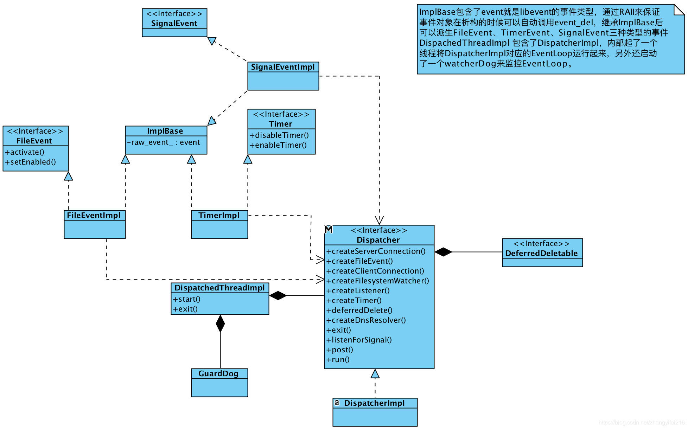
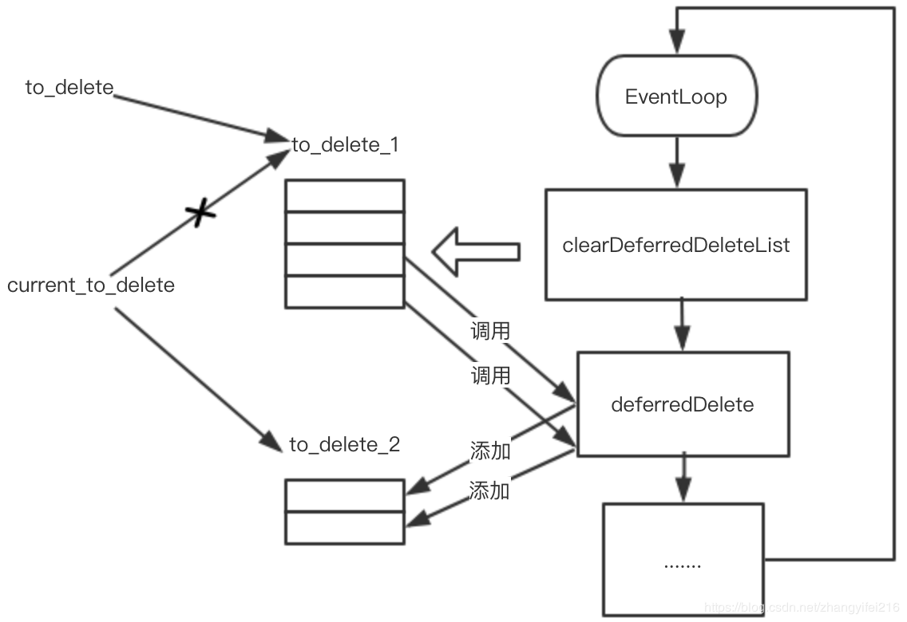
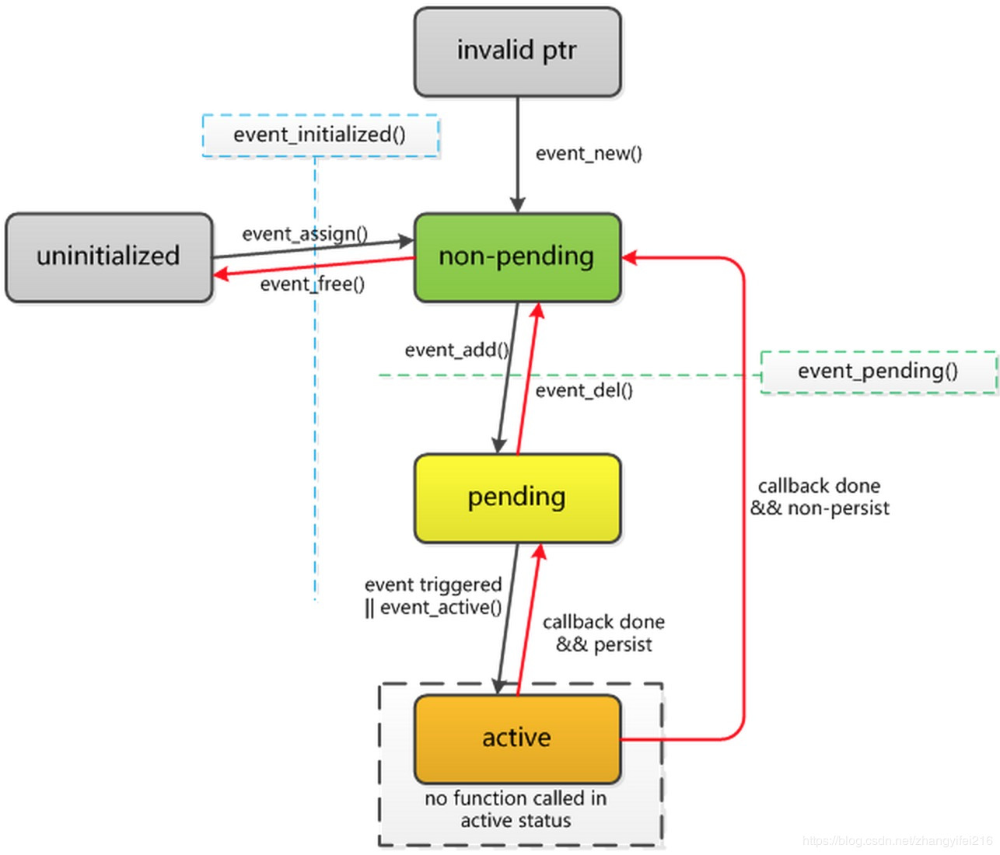

Envoy源码分析之Dispatcher
Dispatcher
在Envoy的代码中Dispatcher是随处可见的，可以说在Envoy中有着举足轻重的地位，一个Dispatcher就是一个EventLoop，其承担了任务队列、网络事件处理、定时器、信号处理等核心功能。在Envoy threading model这篇文章所提到的EventLoop(Each worker thread runs a “non-blocking” event loop)指的就是这个Dispatcher对象。这个部分的代码相对较独立，和其他模块耦合也比较少，但重要性却不言而喻。下面是与Dispatcher相关的类图，在接下来会对其中的关键概念进行介绍。

Dispatcher 和 Libevent
Dispatcher本质上就是一个EventLoop，Envoy并没有重新实现，而是复用了Libevent中的event_base，在Libevent的基础上进行了二次封装并抽象出一些事件类，比如FileEvent、SignalEvent、Timer等。Libevent是一个C库，而Envoy是C++，为了避免手动管理这些C结构的内存，Envoy通过继承unique_ptr的方式重新封装了这些libevent暴露出来的C结构。
1 2 3 4 5 6 | |
通过CSmartPtr就可以将Libevent中的一些C数据结构的内存通过RAII机制自动管理起来，使用方式如下:
1 2 3 4 5 6 7 8 9 10 11 12 13 | |
在Libevent中无论是定时器到期、收到信号、还是文件可读写等都是事件，统一使用event类型来表示，Envoy中则将event作为ImplBase的成员，然后让所有的事件类型的对象都继承ImplBase，从而实现了事件的抽象。
1 2 3 4 5 6 | |
SignalEvent
SignalEvent的实现很简单，通过evsignal_assign来初始化事件，然后通过evsignal_add添加事件使事件成为未决状态(关于Libevent事件状态见附录)。
1 2 3 4 5 6 7 8 9 10 11 12 13 14 15 16 17 18 | |
Timer
Timer事件暴露了两个接口一个用于关闭Timer，另外一个则用于启动Timer，需要传递一个时间来设置Timer的到期时间间隔。
1 2 3 4 5 6 | |
创建Timer的时候会通过evtimer_assgin对event进行初始化，这个时候事件还处于未决状态而不会触发，需要通过event_add添加到Dispatcher中才能被触发。
1 2 3 4 5 6 7 8 9 10 11 12 13 14 15 16 17 18 19 20 | |
disableTimer被调用时其内部会调用event_del来删除事件，使事件成为非未决状态，enableTimer被调用时则间接调用event_add使事件成为未决状态，这样一旦超时时间到了就会触发超时事件。
1 2 3 4 5 6 7 8 9 10 11 12 13 | |
上面的代码在计算
timer时间timeval的时候实现的并不优雅，应该避免使用像1000000这样的不具备可读性的数字常量，社区中有人建议可以改成如下的形式。
1 2 3 4 5 | |
FileEvent
socket套接字相关的事件被封装为FileEvent，其上暴露了二个接口：activate用于主动触发事件，典型的使用场景比如: 唤醒EventLoop、Write Buffer有数据，可以主动触发下可写事件(Envoy中的典型使用场景)等；setEnabled用于设置事件类型，将事件添加到EventLoop中使其成为未决状态。
1 2 3 4 5 6 7 8 9 10 11 12 13 14 15 16 17 18 19 20 | |
任务队列
Dispatcher的内部有一个任务队列，也会创建一个线程专们处理任务队列中的任务。通过Dispatcher的post方法可以将任务投递到任务队列中，交给Dispatcher内的线程去处理。
1 2 3 4 5 6 7 8 9 10 11 | |
post方法将传递进来的callback所代表的任务，添加到post_callbacks_所代表的类型为vector<callback>的成员表变量中。如果post_callbacks_为空的话，说明背后的处理线程是处于非活动状态，这时通过post_timer_设置一个超时时间时间为0的方式来唤醒它。post_timer_在构造的时候就已经设置好对应的callback为runPostCallbacks，对应代码如下:
1 2 3 4 5 6 7 | |
runPostCallbacks是一个while循环，每次都从post_callbacks_中取出一个callback所代表的任务去运行，直到post_callbacks_为空。每次运行runPostCallbacks都会确保所有的任务都执行完。显然，在runPostCallbacks被线程执行的期间如果post进来了新的任务，那么新任务直接追加到post_callbacks_尾部即可，而无需做唤醒线程这一动作。
1 2 3 4 5 6 7 8 9 10 11 12 13 14 | |
DeferredDeletable
最后讲一下Dispatcher中比较难理解也很重要的DeferredDeletable，它是一个空接口，所有要进行延迟析构的对象都要继承自这个空接口。在Envoy的代码中像下面这样继承自DeferredDeletable的类随处可见。
1 2 3 4 | |
那何为延迟析构呢？用在哪个场景呢?延迟析构指的是将析构的动作交由Dispatcher来完成，所以DeferredDeletable和Dispatcher密切相关。Dispatcher对象有一个vector保存了所有要延迟析构的对象。
1 2 3 4 5 6 7 8 | |
to_delete_1_和to_delete_2_就是用来存放所有的要延迟析构的对象，这里使用两个vector存放，为什么要这样做呢?。current_to_delete_始终指向当前正要析构的对象列表，每次执行完析构后就交替指向另外一个对象列表，来回交替。
1 2 3 4 5 6 7 8 9 10 11 12 13 14 15 16 17 18 19 20 21 | |
上面的代码在执行对象析构的时候先使用to_delete来指向当前正要析构的对象列表，然后将current_to_delete_指向另外一个列表，这样在添加延迟删除的对象时，就可以做到安全的把对象添加到列表中了。因为deferredDelete和clearDeferredDeleteList都是在同一个线程中运行，所以current_to_delete_是一个普通的指针，可以安全的更改指针指向另外一个，而不用担心有线程安全问题。
1 2 3 4 5 6 7 8 | |
当有要进行延迟析构的对象时，调用deferredDelete即可，这个函数内部会通过current_to_delete_把对象放到要延迟析构的列表中，最后判断下当前要延迟析构的列表大小是否是1，如果是1表明这是第一次添加延迟析构的对象，那么就需要通过deferred_delete_timer_把背后的线程唤醒执行clearDeferredDeleteList函数。这样做的原因是避免多次唤醒，因为有一种情况是线程已经唤醒了正在执行clearDeferredDeleteList，在这个过程中又有其他的对象需要析构而加入到vector中。

到此为止deferredDelete的实现原理就基本分析完了，可以看出它的实现和任务队列的实现很类似，只不过一个是循环执行callback所代表的任务，另一个是对对象进行析构。最后我们来看一下deferredDelete的应用场景，却“为何要进行延迟析构?”在Envoy的源代码中经常会看到像下面这样的代码片段。
1 2 3 4 5 6 7 8 9 10 11 12 13 | |
传递给Dispatcher的callback都是通过裸指针的方式进行回调，如果进行回调的时候对象已经析构了，就会出现野指针的问题，我相信C++水平还可以的同学都会看出这个问题，除非能在逻辑上保证Dispatcher的生命周期比所有对象都短，这样就能保证在回调的时候对象肯定不会析构，但是这不可能成立的，因为Dispatcher是EventLoop的核心。
一个线程运行一个EventLoop直到线程结束，Dispatcher对象才会析构，这意味着Dispatcher对象的生命周期是最长的。所以从逻辑上没办法保证进行回调的时候对象没有析构。可能有人会有疑问，对象在析构的时候把注册的事件取消不就可以避免野指针的问题吗? 那如果事件已经触发了，callback正在等待运行呢？ 又或者callback运行了一半呢？前者libevent是可以保证的，在调用event_del的时候可以把处于等待运行的事件取消掉，但是后者就无能为力了，这个时候如果对象析构了，那行为就是未定义了。沿着这个思路想一想，是不是只要保证对象析构的时候没有callback正在运行就可以解决问题了呢？是的，只要保证所有在执行中的callback执行完了，再做对象析构就可以了。可以利用Dispatcher是顺序执行所有callback的特点，向Dispatcher中插入一个任务就是用来对象析构的，那么当这个任务执行的时候是可以保证没有其他任何callback在运行。通过这个方法就完美解决了这里遇到的野指针问题了。
或许有人又会想，这里是不是可以用shared_ptr和shared_from_this来解这个呢? 是的，这是解决多线程环境下对象析构的秘密武器，通过延长对象的生命周期，把对象的生命周期延长到和callback一样，等callback执行完再进行析构，同样可以达到效果，但是这带来了两个问题，第一就是对象生命周期被无限拉长，虽然延迟析构也拉长了生命周期，但是时间是可预期的，一旦EventLoop执行了clearDeferredDeleteList任务就会立刻被回收，而通过shared_ptr的方式其生命周期取决于callback何时运行，而callback何时运行这个是没办法保证的，比如一个等待socket的可读事件进行回调，如果对端一直不发送数据，那么callback就一直不会被运行，对象就一直无法被析构，长时间累积会导致内存使用率上涨。第二就是在使用方式上侵入性较强，需要强制使用shared_ptr的方式创建对象。
总结
Dispatcher总的来说其实现还是比较简单明了的，比较容易验证其正确性，同样功能也相对较弱，和chromium的MessageLoop、boost的asio都是相似的用途，但是功能上差得比较多。好在这是专门给Envoy设计的，而且Envoy的场景也比较单一，不必做成那么通用的。另外一个我觉得比较奇怪的是，为什么在DeferredDeletable的实现中要用to_delete_1_和to_delete_2_两个队列交替来存放，其实按照我的理解一个队列即可，因为clearDeferredDeleteList和deferredDelete是保证在同一个线程中执行的，就和Dispatcher的任务队列一样，用一个队列保存所有要执行的任务，循环的执行即可。但是Envoy中没有这样做，我理解这样设计的原因可能是因为相比于任务队列来说延迟析构的重要性更低一些，大量对象的析构如果保存在一个队列中循环的进行析构势必会影响其他关键任务的执行，所以这里拆分成两个队列，多个任务交替的执行，就好比把一个大任务拆分成了好几个小任务顺序来执行。
附录
- Libevent状态转换图 